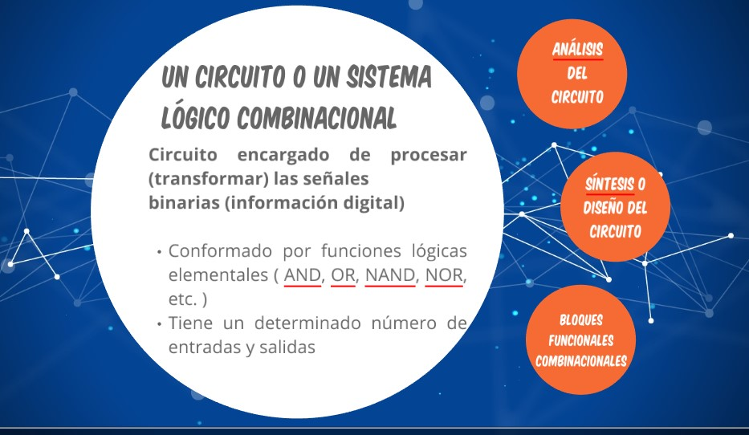

Arquitectura and Computadoras
Bienvendo a este blog informativo
Conozcamos las Operaciones Basicas Binarias
Publicado el Septiembre, 2019
En esta sección encontraremos las cuatro operaciones binarias (suma, resta, multiplicación, división), ademá ejercios resueltos de cada uno de ellos.
ÁLGEBRA BOOLEANA
Publicado el Septiembre, 2019
En esta sección encontraremos acerca de la algebra booleana(compuertas logicas, las propiedades) ademá ejercios resueltos.

Circuitos conbinacionales
Publicado el Septiembre, 2019
En esta sección encontraremos la conceptualizacion, ánlisis y síntesis los circuitos Conbinacionales, ademá de los bloques funcionales como los codificadores, decocificadores, multiplexores, demultiplexores, etc.

Publicado el Septiembre, 2019
En esta sección encontraremos referente a Tipos de arquitectura de computadoras, Taxonomía de Flynn, Componente Esquemático del computador